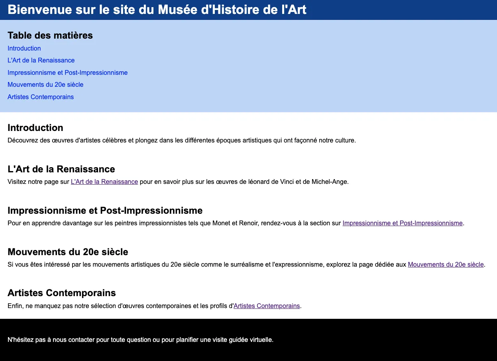

Utiliser les balises sémantiques pour structurer le contenu, appliquer le formatage HTML pour styliser le texte et créer des ancres <a> pour la navigation interne.

Intructions
Considérez le texte suivant et suivez les instructions pour appliquer les balises sémantiques, de formatage HTML et les ancres <a>de manière appropriée.
Texte
Bienvenue sur le site de notre musée virtuel consacré à l'histoire de l'art.
Découvrez des œuvres d'artistes célèbres et plongez dans les différentes époques artistiques qui ont façonné notre culture.
**Table des matières**
1. Introduction
2. L'Art de la Renaissance
3. Impressionnisme et Post-Impressionnisme
4. Mouvements du 20e siècle
5. Artistes Contemporains
Visitez notre page sur **L'Art de la Renaissance** pour en savoir plus sur les œuvres de léonard de Vinci et de Michel-Ange.
Pour en apprendre davantage sur les peintres impressionnistes tels que Monet et Renoir, rendez-vous à la section sur **Impressionnisme et Post-Impressionnisme**.
Si vous êtes intéressé par les mouvements artistiques du 20e siècle comme le surréalisme et l'expressionnisme, explorez la page dédiée aux **Mouvements du 20e siècle**.
Enfin, ne manquez pas notre sélection d'œuvres contemporaines et les profils d'**Artistes Contemporains**.
N'hésitez pas à nous contacter pour toute question ou pour planifier une visite guidée virtuelle.
Lien pour CSS
Copier et ajouter ce lien à l'intérieur de la balise <head>
< link href="./style.css" rel="stylesheet ">
Code CSS
* {
box-sizing: border-box;
margin: 0;
}
header {
padding-left: 40px;
background-color: rgb(13, 67, 149);
color: white;
}
nav {
margin-top: 0;
padding-bottom: 20px;
padding-top: 20px;
padding-left: 40px;
background-color: rgb(196, 217, 248);
}
nav a {
display: block;
margin-bottom: 5px;
text-decoration: none;
color: blue;
}
body {
font-family: Arial, sans-serif;
line-height: 1.6;
}
section {
padding-left: 40px;
padding-top: 20px;
padding-bottom: 20px;
}
footer {
background-color: black;
color: white;
padding: 40px;
}
h2 {
font-weight: bold;
}
Tâches
Création de la structure de base du document HTML
Commencez par créer un fichier HTML et CSS en ouvrant VS Code et en enregistrant le fichier index avec l'extension ".html" et le fichier style avec l'extension ".css".
À l'intérieur du fichier, écrivez la déclaration !DOCTYPE pour indiquer que vous créez un document HTML5.
Ensuite, ouvrez la balise html.
Dans la balise head, ajoutez le titre de la page entre les balises.
Ajjouter le lien vers le fichier CSS dans head.
Enfin, ouvrez la balise body pour le contenu de la page.
Ajout du contenu principal
Dans la section body, commencez par ajouter un en-tête avec un titre principal en utilisant la balise.
Écrivez votre titre principal entre les balises h1.
Ensuite, ajoutez une section pour la navigation, qui servira de table des matières.
Dans cette section, vous pouvez écrire un titre de navigation entre les balises h2
Ajout des liens de navigation interne
À l'intérieur de la balise nav, écrivez des liens a pour chaque section du contenu.
Utilisez l'attribut href à l'aide du préfixe #. Par exemple : href="#intro".
Ajout des sections de contenu avec des ancres
À l'intérieur de la balise article, utiliser des sections individuelles.
Dans chaque section, utilisez des balises h2 pour les titres des sections et des paragraphes p pour le contenu.
Pour créer des liens vers des sections spécifiques, utilisez la balise a avec l'attribut href (par exemple, href="#intro").
Footer
N'oubliez pas d'ajouter votre footer.
Notes de cours 📚
Sémantique
header, footer, nav, main, section, aside